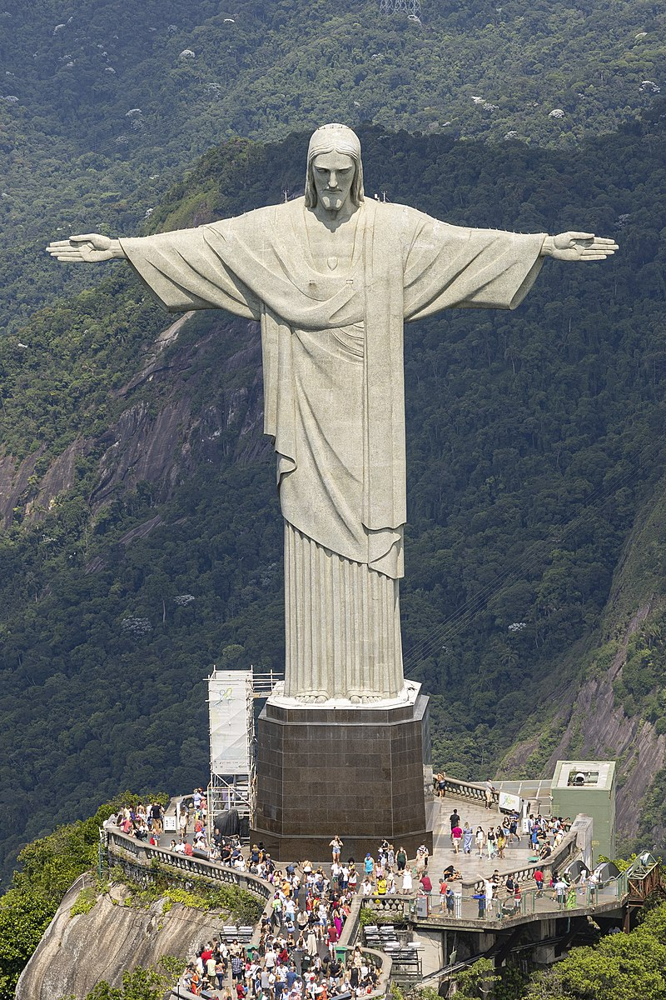
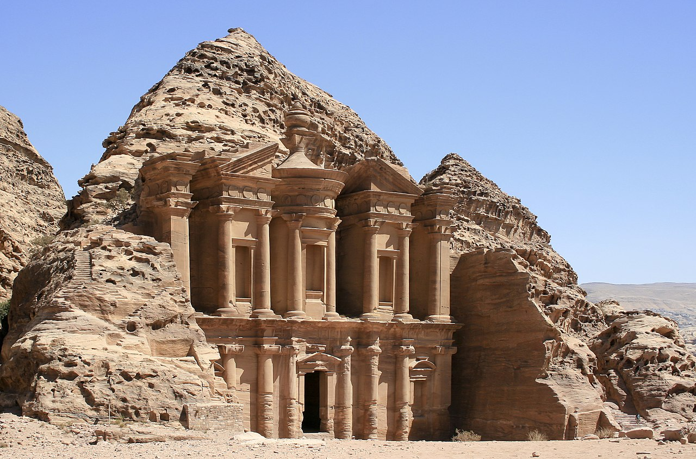

New 7 Wonders of the World
.jpeg)


|
|
 |
|
|
New 7 Wonders of the World |
|||
|
|
 |
|
The New 7 Wonders of the World was a campaign started in 2001 to choose Wonders of the World from
a selection of 200 existing monuments.The popularity poll via free web-based voting and
telephone voting was led by Canadian-Swiss Bernard Weber and organized by the New 7 Wonders
Foundation (N7W) based in Zurich, Switzerland, with winners announced on 7 July 2007 at Estádio
da Luz in Lisbon. The poll was considered unscientific partly because it was
possible for people to cast multiple votes.According to John Zogby, founder and current
President/CEO of the Utica, New York–based polling organization Zogby International, New 7
Wonders Foundation drove "the largest poll on record".
The program drew a wide range of official reactions. Some countries touted their finalist and
tried to get more votes cast for it, while others downplayed or criticized the contest.
After supporting the New 7 Wonders Foundation at the beginning of the campaign by providing
advice on nominee selection, the United Nations Educational, Scientific, and Cultural
Organization (UNESCO), bound by its bylaws to record and give equal status to all World Heritage
Sites, distanced itself from the undertaking in 2001 and again in 2007.
The 7 winners were chosen from 21 candidates, which had been whittled down from 77 choices by a
panel in 2006.
The New 7 Wonders Foundation, established in 2001, relied on private donations and the sale of
broadcast rights and received no public funding. After the final announcement, New 7 Wonders
said it did not earn anything from the exercise and barely recovered its investment.
Although N7W describes itself as a not-for-profit organization, the company behind it—the New
Open World Corporation (NOWC)—is a commercial business. All licensing and sponsorship money is
paid to NOWC.
The foundation ran two subsequent programs: New 7 Wonders of Nature, the subject of voting until
2011, and New7Wonders Cities, which ended in 2014.
|
The Great Wall of China (traditional Chinese: 萬里長城; simplified Chinese: 万里长城; pinyin: Wànlǐ Chángchéng, literally "ten thousand li long wall") is a series of fortifications that were built across the historical northern borders of ancient Chinese states and Imperial China as protection against various nomadic groups from the Eurasian Steppe. Several walls were built from as early as the 7th century BC,[4] with selective stretches later joined by Qin Shi Huang (220–206 BC), the first emperor of China. Little of the Qin wall remains.[5] Later on, many successive dynasties built and maintained multiple stretches of border walls. The best-known sections of the wall were built by the Ming dynasty (1368–1644). Petra (Arabic: ٱلْبَتْراء, romanized: Al-Batrāʾ; Greek: Πέτρα, "Rock"), originally known to its inhabitants as Raqmu is an historic and archaeological city in southern Jordan. Famous for its rock-cut architecture and water conduit systems, Petra is also called the "Rose City" because of the colour of the sandstone from which it is carved.[5] The city is one of the New 7 Wonders of the World and a UNESCO World Heritage Site.[6] The Colosseum (/ˌkɒləˈsiːəm/ KOL-ə-SEE-əm; Italian: Colosseo [kolosˈsɛːo]) is an elliptical amphitheatre in the centre of the city of Rome, Italy, just east of the Roman Forum. It is the largest ancient amphitheatre ever built, and is still the largest standing amphitheatre in the world, despite its age. Construction began under the Emperor Vespasian (r. 69–79 AD) in 72[1] and was completed in AD 80 under his successor and heir, Titus (r. 79–81).[2] Further modifications were made during the reign of Domitian (r. 81–96).[3] The three emperors who were patrons of the work are known as the Flavian dynasty, and the amphitheatre was named the Flavian Amphitheatre (Latin: Amphitheatrum Flavium; Italian: Anfiteatro Flavio [aɱfiteˈaːtro ˈflaːvjo]) by later classicists and archaeologists for its association with their family name (Flavius). Chichén Itzá[nb 1] (often spelled Chichen Itza in English and traditional Yucatec Maya) Yucatec Maya pronunciationⓘ was a large pre-Columbian city built by the Maya people of the Terminal Classic period. The archeological site is located in Tinúm Municipality, Yucatán State, Mexico.[1] Chichén Itzá was a major focal point in the Northern Maya Lowlands from the Late Classic (c. AD 600–900) through the Terminal Classic (c. AD 800–900) and into the early portion of the Postclassic period (c. AD 900–1200). The site exhibits a multitude of architectural styles, reminiscent of styles seen in central Mexico and of the Puuc and Chenes styles of the Northern Maya lowlands. The presence of central Mexican styles was once thought to have been representative of direct migration or even conquest from central Mexico, but most contemporary interpretations view the presence of these non-Maya styles more as the result of cultural diffusion. Machu Picchu[a] is a 15th-century Inca citadel located in the Eastern Cordillera of southern Peru on a mountain ridge at 2,430 meters (7,970 ft).[9] Often referred to as the "Lost City of the Incas",[10] it is the most familiar icon of the Inca Empire. It is located in the Machupicchu District within Urubamba Province[11] above the Sacred Valley, which is 80 kilometers (50 mi) northwest of Cusco. The Urubamba River flows past it, cutting through the Cordillera and creating a canyon with a subtropical mountain climate.[12] The Inca civilization had no written language and following the first encounter by the Spanish soldier Baltasar Ocampo, no Europeans are recorded to have visited the site from the late 16th century until the 19th century. As far as historical knowledge extends, there are no existing written records detailing the site during its period of active use. The names of the buildings, their supposed uses, and their inhabitants, are the product of modern archaeologists based on physical evidence, including tombs at the site. Machu Picchu was built in the classical Inca style, with polished dry-stone walls. Its three primary structures are the Temple of the Sun, the Temple of the Three Windows, and the Intihuatana. From 1929 to 1971, Machu Picchu underwent extensive restoration and conservation work, including structural stabilization and artifact excavation, driven by government initiatives and research expeditions.[13] Most recent archaeologists believe that Machu Picchu was constructed as an estate for the Inca emperor Pachacuti (1438–1472). The Inca built the estate around 1450 but abandoned it a century later, at the time of the Spanish conquest. According to the new AMS radiocarbon dating, it was occupied from c. 1420–1532.[14] Historical research published in 2022 claims that the site was probably called Huayna Picchu by the Inca people themselves, as it exists on the smaller peak of the same name.[15][16] The Taj Mahal (/ˌtɑːdʒ məˈhɑːl, ˌtɑːʒ -/ TAHJ mə-HAHL, TAHZH -, Hindi: [taːdʒ ˈmɛɦ(ɛ)l]; lit. 'Crown of the Palace') is an ivory-white marble mausoleum on the right bank of the river Yamuna in Agra, Uttar Pradesh, India. It was commissioned in 1631 by the fifth Mughal emperor, Shah Jahan (r. 1628–1658) to house the tomb of his beloved wife, Mumtaz Mahal; it also houses the tomb of Shah Jahan himself. The tomb is the centrepiece of a 17-hectare (42-acre) complex, which includes a mosque and a guest house, and is set in formal gardens bounded on three sides by a crenellated wall. Construction of the mausoleum was completed in 1648, but work continued on other phases of the project for another five years. The first ceremony held at the mausoleum was an observance by Shah Jahan, on 6 February 1643, of the 12th anniversary of the death of Mumtaz Mahal. The Taj Mahal complex is believed to have been completed in its entirety in 1653 at a cost estimated at the time to be around ₹5 million, which in 2023 would be approximately ₹35 billion (US$77.8 million). Christ the Redeemer (Portuguese: Cristo Redentor, standard Brazilian Portuguese: [ˈkɾistu ʁedẽˈtoʁ]) is an Art Deco statue of Jesus in Rio de Janeiro, Brazil, created by French-Polish sculptor Paul Landowski and built by Brazilian engineer Heitor da Silva Costa, in collaboration with French engineer Albert Caquot. Romanian sculptor Gheorghe Leonida sculpted the face. Constructed between 1922 and 1931, the statue is 30 metres (98 ft) high, excluding its 8-metre (26 ft) pedestal. The arms stretch 28 metres (92 ft) wide.[1][2] It is made of reinforced concrete and soapstone.[3][4][5] Christ The Redeemer differs considerably from its original design, as the initial plan was a large Christ with a globe in one hand and a cross in the other. Although the project organizers originally accepted the design, it later changed to the statue of today, with the arms spread out wide. |